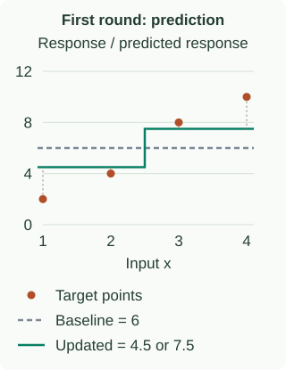

Gradient Boosting: From Residuals to Logits
Gradient boosting adds a function that reduces the current ensemble’s loss. For squared error, this becomes “fit the residuals.” For other losses, the targets are negative derivatives. That distinction explains both regression and classification.
Start with four regression rows
Take $x=(1,2,3,4)$ and $y=(2,4,8,10)$. Use half-squared loss $\ell(y,F)=\tfrac12(y-F)^2$. The best constant starting prediction is the mean, $F_0=6$, because $\partial\sum_i\tfrac12(y_i-c)^2/\partial c=\sum_i(c-y_i)=0$ gives $c=\bar y$.
The residuals are $(-4,-2,2,4)$. Fit a stump splitting at $x=2.5$: its left-leaf residual mean is $-3$, and its right-leaf mean is $+3$. With learning rate $\eta=0.5$, add half of that correction:
$$F_1(x)=F_0(x)+0.5h_1(x).$$| $x$ | $y$ | $y-F_0$ | $h_1$ | $F_1$ | $y-F_1$ |
|---|---|---|---|---|---|
| 1 | 2 | −4 | −3 | 4.5 | −2.5 |
| 2 | 4 | −2 | −3 | 4.5 | −0.5 |
| 3 | 8 | 2 | 3 | 7.5 | 0.5 |
| 4 | 10 | 4 | 3 | 7.5 | 2.5 |

The mean squared error falls from $(16+4+4+16)/4=10$ to $(6.25+0.25+0.25+6.25)/4=3.25$. The second tree must use the new residuals in the last column. Training every tree on the original residuals would repeat the first correction instead of adapting.
Why a gradient gives the next target
Ordinary gradient descent moves a parameter opposite its loss derivative. Here, think of the current predictions on the $n$ training rows as $n$ coordinates. The desired direction at row $i$ is:
$$r_{it}=-\left.\frac{\partial\ell(y_i,F)}{\partial F}\right|_{F=F_{t-1}(x_i)}.$$This derivative asks: if only this row’s predicted score increased a little, how would its loss change? The minus sign chooses the decreasing direction. A tree cannot choose an arbitrary independent change for every row, so fit a regression tree to these $r_{it}$ targets: it approximates the desired direction with a piecewise-constant function.
For squared loss, $\partial\ell/\partial F=F-y$, hence $r=y-F$. “Fit residuals” is therefore a consequence of the loss choice, not the definition of all boosting. This functional-gradient interpretation comes from Friedman’s gradient boosting framework.
The general tree update
- Initialize $F_0(x)=\arg\min_c\sum_i\ell(y_i,c)$.
- Compute negative-gradient targets $r_{it}$ at the current scores.
- Fit a regression tree to those targets, obtaining leaf regions $R_{jt}$.
- For each region, optionally refine its correction against the original loss:
Then update $F_t(x)=F_{t-1}(x)+\eta\sum_j\gamma_{jt}\mathbf1\{x\in R_{jt}\}$. For squared loss, differentiating the leaf objective gives $\gamma_{jt}$ equal to its mean residual. Other losses may need a numerical or Newton update. For logistic loss, a pure-class leaf can drive an unregularized exact correction toward infinity, so practical methods constrain or regularize the update. Some implementations use the fitted gradient values directly with a step size; distinguish that from exact leaf-wise line search.
Classification: update a score, then turn it into a probability
For binary labels $y\in\{0,1\}$, let $F$ be a log-odds score and $p=\sigma(F)=1/(1+e^{-F})$. Binary cross-entropy becomes:
$$\ell(y,F)=-y\ln p-(1-y)\ln(1-p)=\ln(1+e^F)-yF.$$The equality comes from substituting the sigmoid into the two logarithms. Differentiating with respect to the score gives:
$$\frac{\partial\ell}{\partial F}=\frac{e^F}{1+e^F}-y=p-y, \qquad r=y-p.$$If a positive example currently gets probability $0.2$, its target is $+0.8$: raise the score. A negative example at the same probability has target $-0.2$: lower it. These targets are continuous, so the base learner is a regression tree even though the overall task is classification.
The initial score is $F_0=\ln[\bar y/(1-\bar y)]$, the log-odds of the training positive rate. Pure-class data requires special handling because these odds are infinite. If a leaf correction is $0.4$ and $\eta=0.5$, a score of zero becomes $0.2$, and the probability becomes $\sigma(0.2)\approx0.550$—not $0.5+0.2=0.7$.
For multiclass classification, use a score per class, softmax probabilities, and class-wise negative gradients $\mathbf1\{y=k\}-p_k$. The scores are coupled through softmax; this is not simply fitting the integer class IDs as a regression target.
The loss changes the correction
- Absolute error: the initial constant is a median; away from zero error the negative gradient is $\operatorname{sign}(y-F)$. An optimal leaf correction is a median residual.
- Huber loss: residual-sized gradients near zero and capped gradients for large errors provide a robustness trade-off.
- Quantile loss: asymmetric penalties target a conditional quantile, useful when underprediction and overprediction have different costs.
AdaBoost also constructs an additive model, using exponential loss and weighted classifiers. It is related to gradient boosting through stagewise loss minimization; the exact discrete AdaBoost procedure is not identical to every algorithm that regresses negative exponential-loss gradients.
Regularization: how to avoid chasing noise
Learning rate and rounds work together. Smaller $\eta$ makes each correction more cautious, typically requiring more rounds. Equal products $\eta T$ do not imply equal fitted models because later gradients depend on the full path.
Depth, leaf count, and minimum leaf support control each correction’s complexity. A sum of stumps is additive in individual features and cannot represent general interactions such as XOR on the original inputs. Deeper trees can learn interactions, but also fit smaller, noisier groups.
Row and feature subsampling introduce randomness and can regularize training. This is still boosting: the next targets depend on the existing model. Early stopping selects the number of rounds using a held-out validation metric with a patience window. Keep the final test set separate, and evaluate the selected iteration rather than blindly using the last one.